És com està fet el disc per dins, el maquinari de veritat. En un disc dur mecànic hi ha plats que giren,
i cada plat es talla en cercles (pistes) que alhora es divideixen en trossets (sectors). Un SSD no té peces que es moguin:
guarda les dades en xips de memòria, però també es presenta a l'ordinador dividit en sectors.
El sector és la peça més petita que el disc sap guardar. Al meu disc virtual /dev/sdb (25 GiB) cada sector fa
512 bytes. Alguns discs moderns escriuen de veritat en trossos de 4096 bytes, però es fan passar per sectors de 512
perquè els programes vells els entenguin. Per això la mida que diu el sistema no sempre és la que hi ha realment al disc.
El disc /dev/sdb: 25 GiB i sectors de 512 bytes.
Estructura lògica d'un disc
Quins dos formats hi ha?
L'estructura lògica és com es reparteix el disc en parts (particions). Per això el disc té un "mapa"
que diu on comença i acaba cada part. Hi ha dos tipus de mapa:
MBR
És el mapa antic i senzill. Només deixa fer 4 particions principals i els discs no poden passar d'uns
2 TB. Si en necessites més de quatre, una de les principals es converteix en una "caixa" (partició estesa)
que dins en pot tenir més (particions lògiques).
GPT
És el mapa modern, fet per a discs grans i per a moltes particions sense el límit de quatre. A més, en guarda
còpies i les comprova, així que detecta si s'ha fet malbé.
Quin triar? Depèn del disc i de com arrenca l'ordinador. GPT va amb l'arrencada moderna (UEFI) i és el normal als equips d'avui; MBR es
fa servir sobretot per compatibilitat amb equips vells. Atenció: MBR i GPT són maneres de dividir el disc, no maneres d'arrencar.
Quan vaig obrir fdisk /dev/sdb, em va dir "Created a new DOS (MBR) disklabel": el meu disc nou
va quedar amb MBR.
Partició: és una parcel·la del terreny, una part del disc que es separa de la resta.
Un sol disc en pot tenir diverses i cadascuna es comporta com si fos un disc independent.
Volum: és la partició quan el sistema operatiu ja la pot fer servir
(amb un sistema de fitxers i muntada). Normalment un volum és una partició, però a vegades un volum
pot ocupar diverses.
Al damunt del volum es construeix el sistema de fitxers: l'"índex" que sap quines carpetes i fitxers hi ha i on
són les seves dades. Per això particionar i formatar no és el mateix: particionar és tallar la parcel·la, i formatar és
construir-hi la casa.
El sector (512 bytes al meu disc) és la peça més petita a nivell físic i no es pot canviar. Però el sistema de fitxers no
treballa amb peces tan petites: n'agrupa unes quantes en un bloc. Al meu cas, un bloc fa
4096 bytes (8 sectors). La mida del bloc es decideix quan es crea el sistema de fitxers, i després no es pot canviar sense
tornar-lo a crear.
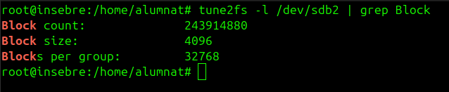
Amb tune2fs -l /dev/sdb2 | grep Block es veu la mida del bloc: 4096.
La fragmentació
Pot ser interna o externa.
Fragmentació interna
Un bloc és com una caixa: encara que hi posis una cosa petita, la caixa queda ocupada sencera. Ho vaig comprovar
amb un fitxer de 5 bytes:
echo "Hola" > prova.txt
ls -l prova.txt # 5 bytes (el que hi ha escrit)
du -h prova.txt # 4,0K (el que ocupa al disc)
du -b prova.txt # 5
Té 5 bytes però ocupa 4 KB, perquè se'n va un bloc sencer. L'espai que es perd dins del bloc és la fragmentació interna. Si els blocs són grans, es perd més amb molts fitxers petits; si són petits, es perd menys, però el sistema ha de controlar molts més blocs i va una mica més carregat.
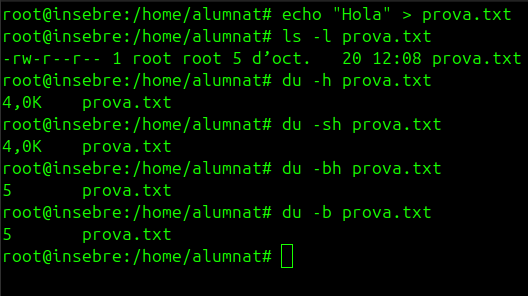
5 bytes de contingut, 4,0K ocupats.
Fragmentació externa
Quan es creen i s'esborren fitxers durant molt de temps, el disc queda ple de forats lliures de mides diferents. Un fitxer nou que no cap en cap forat es
parteix en trossos i queda escampat pel disc. En un disc dur mecànic això alenteix, perquè el capçal que llegeix ha de
moure's d'un lloc a l'altre. Per arreglar-ho es pot desfragmentar, que reordena els trossos. En un SSD no cal fer-ho com a rutina:
no hi ha capçal, l'accés és igual de ràpid a tot arreu i reescriure tantes dades gasta el disc.
Sistemes de fitxers segons el sistema operatiu
Quins fan servir Windows i Ubuntu?
Windows: FAT, FAT32 i NTFS.
Ubuntu: ext4.
Quin sistema de fitxers es tria depèn de qui haurà de llegir el disc. Per exemple, un pendrive que s'ha de poder fer servir en
Windows i en Linux no seria ext4, sinó un com exFAT o NTFS, que els dos entenen.
Formatar és preparar un disc perquè s'hi puguin guardar dades. Hi ha tres nivells.
1. De baix nivell
Es prepara el disc físic (els sectors). Als discs d'ara ho fa el fabricant i l'usuari no ho pot repetir.
Omplir el disc de zeros no és un formatatge de baix nivell de debò, només és escriure damunt de les dades.
2. D'alt nivell
Es fa des del sistema operatiu: es crea el sistema de fitxers (carpetes inicials i índex). Un formatatge ràpid només refà aquest índex i
no esborra el contingut dels sectors, així que les dades antigues es poden recuperar mentre no s'escrigui res a sobre.
Si es fa servir el mateix sistema és encara més fàcil, perquè les dades continuen allà.
3. De mig nivell
Es crea el mapa del disc i es tallen les particions (amb fdisk). El nom no és igual a tot arreu, però és el
pas que hi ha entre el disc físic i el sistema de fitxers.
Pràctica 1: recuperació de fitxers després d'un formatatge
En aquesta pràctica he comprovat què passa quan es formata un disc i si es poden recuperar els fitxers. Per no tocar cap disc real he treballat amb un fitxer, disc.img, que fa de disc virtual. Les ordres amb dd, mkfs i rm poden destruir dades, per això només les he aplicat sobre aquest fitxer.
Pas 0 · Preparar la carpeta i els fitxers de prova
Abans de res vaig preparar un entorn de treball amb tres fitxers diferents (una foto, un PDF i un text) per veure després quins es poden recuperar.
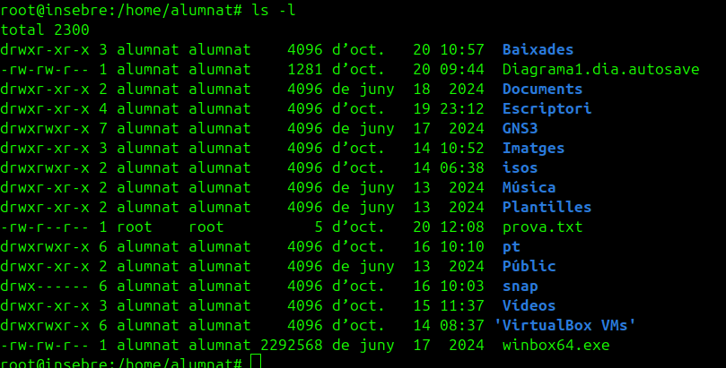
Començo mirant què hi ha a la meva carpeta personal amb ls -l.
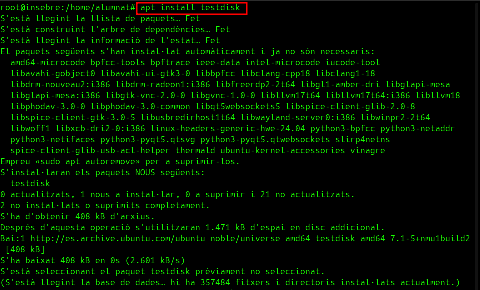
Instal·lo el paquet testdisk amb apt install; hi ve inclòs PhotoRec, el programa que recuperarà els fitxers.
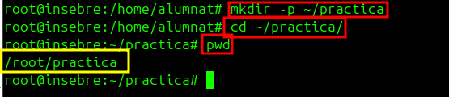
Creo la carpeta de treball ~/practica, hi entro i amb pwd comprovo que sóc a /root/practica.
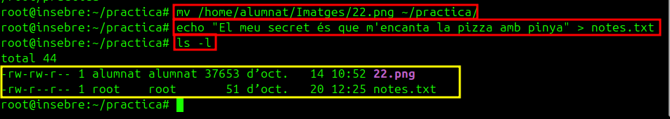
Hi moc una foto (22.png) amb mv, escric una frase a notes.txt amb echo i amb ls -l veig els dos fitxers.
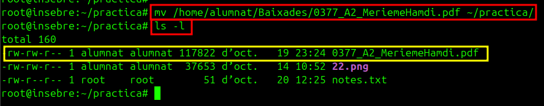
Hi moc també un PDF. Ara tinc els tres fitxers de prova: una foto, un PDF i un text.
Part 1 · Crear el disc virtual
No volia tocar cap disc de veritat, així que vaig crear un fitxer que fa de disc.
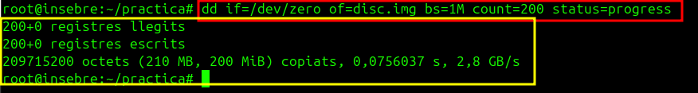
Amb dd creo disc.img, un fitxer de 200 MiB ple de zeros que farà de disc virtual.
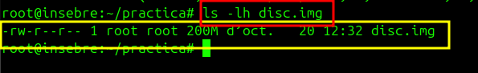
ls -lh disc.img confirma que existeix i que fa 200M.
Part 2 · Formatar el disc i desar-hi els fitxers
Li vaig posar un sistema de fitxers ext4, el vaig muntar com si fos una unitat i hi vaig copiar els fitxers de prova.
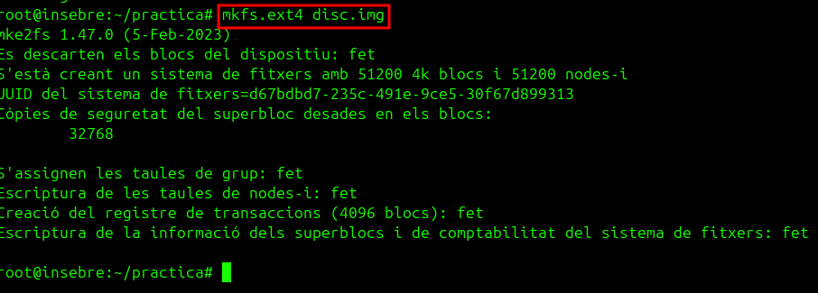
Formato el disc virtual amb mkfs.ext4 disc.img. Crea 51200 blocs de 4 KB i un UUID nou.
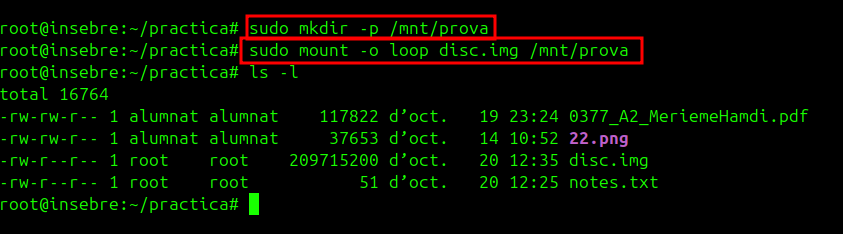
Creo /mnt/prova i hi munto el disc amb mount -o loop. L'opció loop serveix per muntar un fitxer com si fos un disc.
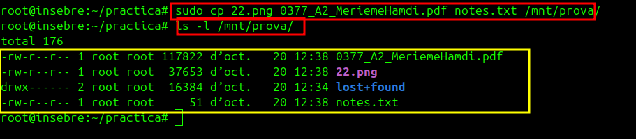
Copio els tres fitxers dins del disc amb cp. Amb ls -l /mnt/prova els veig, i també lost+found, que crea ext4.
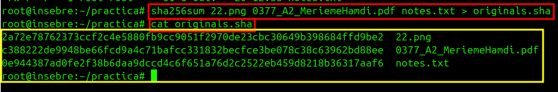
Calculo l'empremta SHA-256 dels originals amb sha256sum i la guardo a originals.sha, per comparar-la després amb la dels recuperats.
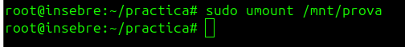
Desmunto el disc amb umount abans de tornar-lo a formatar.
Part 3 · Formatatge d'alt nivell
Vaig tornar a crear el sistema de fitxers per veure què passa amb el que hi havia dins.
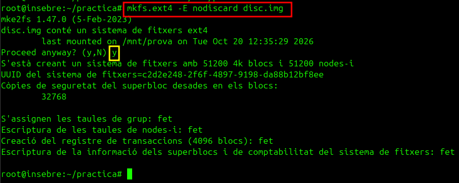
Torno a formatar amb mkfs.ext4 -E nodiscard. Em diu que disc.img ja conté un ext4 i li responc y.
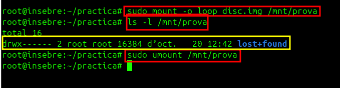
Munto el disc, miro què hi ha i només surt lost+found: sembla buit. Després el desmunto.
Part 4 · Recuperar els fitxers
Encara que el disc semblava buit, les dades continuaven als blocs. Amb PhotoRec vaig intentar recuperar-les.
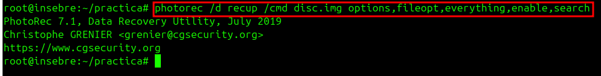
Executo photorec sobre disc.img; guarda el que troba a la carpeta recup.
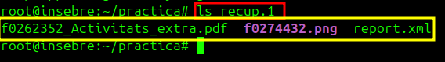
ls recup.1 mostra tres fitxers recuperats amb noms nous: un PDF, una imatge PNG i un report.xml.
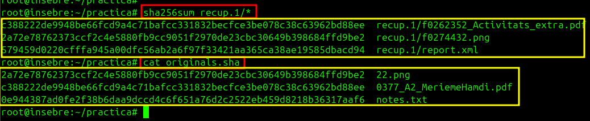
Calculo el sha256sum dels recuperats i els comparo amb originals.sha: la foto i el PDF tenen exactament el mateix hash que els originals, així que són idèntics.
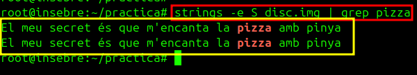
PhotoRec no ha trobat el text. El busco amb strings -e S disc.img | grep pizza i la frase surt.
Part 5 · Esborrat de baix nivell
Per últim vaig omplir el disc de zeros, que sobreescriu les dades, i ho vaig tornar a provar.
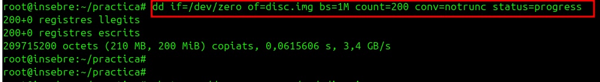
Omplo tot el disc de zeros amb dd ... conv=notrunc.
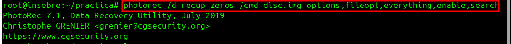
Torno a executar PhotoRec, ara sobre el disc de zeros, i guarda el resultat a recup_zeros.
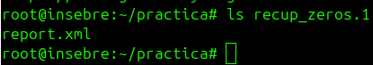
ls recup_zeros.1 només mostra report.xml: ja no hi ha ni la foto ni el PDF.
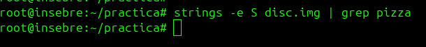
Torno a buscar la frase amb strings i grep, i ara no surt res.
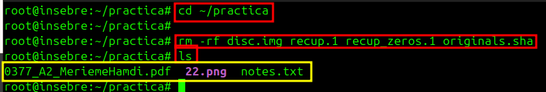
Per netejar, esborro disc.img, les carpetes recuperades i originals.sha amb rm -rf. A ~/practica només queden els tres fitxers originals.
Preguntes de la pràctica
Després de la part 3, el disc semblava buit. On eren realment els fitxers? Als mateixos blocs de sempre. En formatar només es crea un sistema de fitxers nou, és a dir, s'esborra l'índex que diu on són les coses, però no s'esborren les dades.
Per què els fitxers recuperats tenen noms diferents dels originals? El nom no és dins del fitxer, sinó a les metadades del sistema de fitxers. En formatar-se es perden, i PhotoRec només recupera el contingut i li posa un nom nou.
Com puc demostrar que la foto recuperada és exactament la mateixa que l'original? Calculant el SHA-256 de totes dues. Si el resultat és igual, els fitxers són idèntics byte a byte; a la captura coincideixen.
Per què PhotoRec ha trobat la foto i el PDF, però no notes.txt? Com l'he trobat igualment? PhotoRec reconeix els fitxers per la seva capçalera, i una foto o un PDF en tenen. Un text pla no en té cap. El vaig trobar amb strings i grep, que busquen text dins del disc.
Vull vendre un USB on tenia fotos personals. Quin formatge faria abans de vendre'l i per què? Un formatatge normal no n'hi ha prou, perquè les dades es poden recuperar, com he vist. Faria una sobreescriptura completa (com la dels zeros, o millor amb l'esborrat segur del fabricant) perquè no quedi res per recuperar.
Pràctica 2: particions i muntatge
Aquí he treballat amb un disc virtual afegit a la màquina Ubuntu per crear una partició, formatar-la amb ext4, muntar-la en una carpeta i deixar-la preparada per muntar-se sola amb /etc/fstab. Així he vist la diferència entre disc, partició, sistema de fitxers i punt de muntatge.
Pas 1 · Identificar el disc virtual
Vaig afegir un disc a la màquina Ubuntu i el vaig buscar amb fdisk.
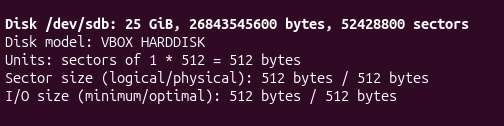
El sistema el veu com /dev/sdb: 25 GiB i sectors de 512 bytes.
Pas 2 · Crear una partició amb fdisk
Dins de fdisk creo una partició nova amb n i guardo amb w. Fins que no poso w, res no s'escriu al disc.
fdisk /dev/sdb avisa que no té taula de particions i crea una etiqueta DOS (MBR).
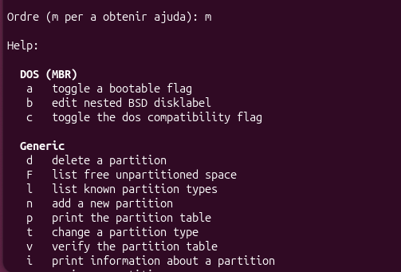
Amb m veig l'ajuda de fdisk.
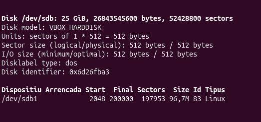
Després de crear-la, la taula mostra /dev/sdb1, de tipus Linux, del sector 2048 al 200000 (96,7 MiB).
Pas 3 · Crear el sistema de fitxers
Amb mkfs.ext4 creo el sistema de fitxers; l'opció -b tria la mida del bloc.
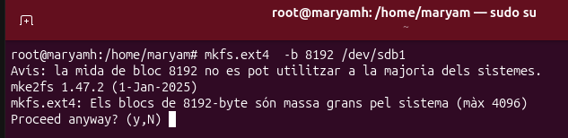
mkfs.ext4 -b 8192 /dev/sdb1 avisa que la mida del bloc és massa gran per al sistema (màxim 4096) i demana confirmació.
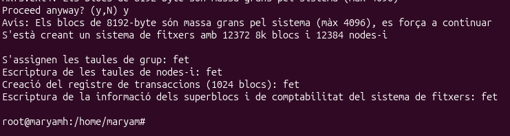
Confirmo i crea el sistema de fitxers amb 12372 blocs de 8 KB i 12384 nodes-i.
Pas 4 · Muntar la partició
Muntar és connectar la partició a una carpeta, el punt de muntatge.
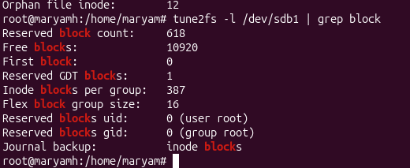
tune2fs -l /dev/sdb1 | grep block mostra dades dels blocs del sistema de fitxers.
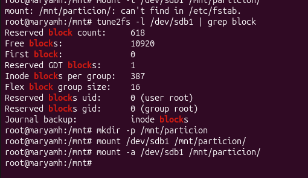
Creo /mnt/particion i hi munto /dev/sdb1 amb mount.
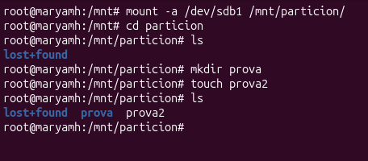
Dins hi veig lost+found, i hi creo la carpeta prova i el fitxer prova2.
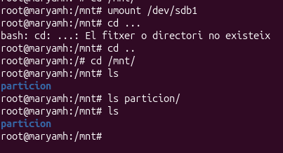
Amb umount /dev/sdb1 la desmunto: /mnt/particion queda buida.
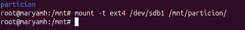
La torno a muntar amb mount -t ext4 /dev/sdb1 /mnt/particion/.
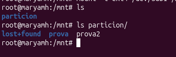
Els meus fitxers (prova i prova2) tornen a aparèixer.
Pas 5 · Muntar-la automàticament amb fstab
Per no haver-la de muntar a mà cada cop, la poso a /etc/fstab. Amb blkid miro l'UUID de la partició.
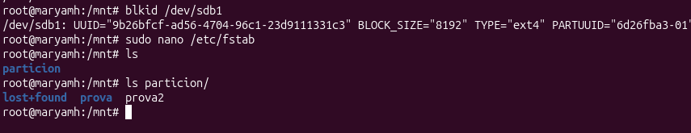
blkid /dev/sdb1 mostra l'UUID, el tipus ext4 i la mida de bloc.
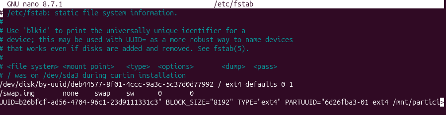
Obro /etc/fstab amb nano per afegir-hi la línia de la partició.
Missió «El servidor va lent»: un servidor Ubuntu té processos que no hi haurien de ser i una descàrrega urgent ha d'acabar com més aviat millor. Un procés és un programa mentre s'executa, i cada un té un número, el PID. He treballat amb uns scripts que simulen el problema.
Pas 0 · Preparar la missió
Vaig crear la carpeta de la missió i cinc scripts. Un script és un fitxer de text amb ordres que el sistema executa una darrere l'altra.
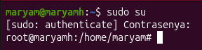
Entro com a administrador amb sudo su.
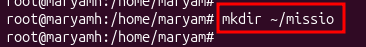
Creo la carpeta de la missió: mkdir ~/missio.
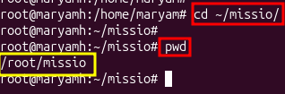
Hi entro amb cd i amb pwd comprovo que sóc a /root/missio.
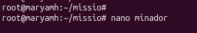
Obro l'editor nano per crear el primer script, minador.
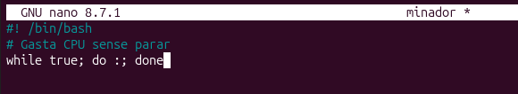
Hi escric tres línies: la capçalera #! /bin/bash, un comentari i un bucle infinit while true; do :; done, que només gasta CPU.
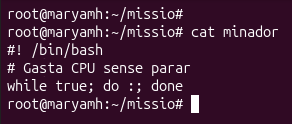
Amb cat minador comprovo que s'ha desat bé.
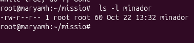
ls -l minador mostra -rw-r--r--: encara no té permís d'execució.
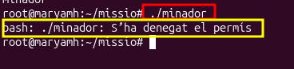
Si el vull executar amb ./minador em dona «S'ha denegat el permís».
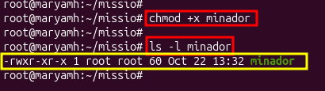
Amb chmod +x minador li dono permís d'execució i ls -l ja el mostra amb x i en verd.
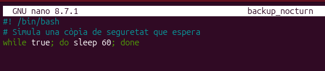
Creo backup_nocturn: un bucle que només fa sleep 60, com una còpia de seguretat que espera.
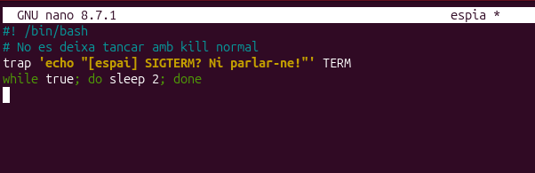
Creo espia: amb trap ignora el senyal SIGTERM i escriu un missatge en lloc de tancar-se.Creo descarrega.sh, que simula una descàrrega i va escrivint el percentatge a progres.txt.Creo sospitosos.sh, que engega els dos minadors, el backup i l'espia en segon pla.Les ordres nano que vaig fer servir per crear i obrir els scripts.Dono permís d'execució als scripts de cop amb chmod +x i amb ls -l veig els cinc fitxers executables.Executo ./sospitosos.sh: surt «Fet. El servidor comença a anar lent...» i els sospitosos ja treballen en segon pla.
Pas 1 · Reconeixement: veure els processos
Primer vaig mirar quants processos hi ha i on eren els sospitosos.
echo $$ em dona el PID de la meva shell (996925).ps mostra els processos d'aquest terminal: sudo, su, bash, els minadors, els espies, els backups i sleep.ps -u $USER llista tots els processos de l'usuari.ps -A | wc -l compta tots els processos del sistema: 246.pstree -p mostra l'arbre de processos; aquí es veuen backup_nocturn i espia amb el seu sleep fill.Més avall de l'arbre apareixen els processos minador.
Pas 2 · Qui consumeix més?
Aquí vaig buscar quins processos fan servir més CPU.
Obro top: els minador són dalt de tot, gastant CPU.ps aux --sort=-%cpu | head -6 també els mostra primers, ordenats per CPU.
Pas 3 · Interrogatori amb ps
Vaig fer servir ps i pgrep per trobar el PID de cada sospitós i saber-ne més coses.
ps aux | grep minador filtra només els minadors; l'última línia és el mateix grep.Amb grep [m]inador evito que surti la línia del propi grep.pgrep minador dona només els PID.pgrep -l 'minador|espia|backup' busca els tres sospitosos alhora, amb el nom al costat del PID.ps -o pid,ppid,user,stat,etime,%cpu,comm -C ... mostra només les columnes que m'interessen: PID, pare, estat, temps i CPU.En una altra tanda de proves, top mostra tres minador amb els PID 3260, 3261 i 3293.ps -o pid,comm -p 3261 confirma que aquest PID és un minador.
Pas 4 · La descàrrega urgent: primer i segon pla
Vaig moure la descàrrega entre primer pla, pausa i segon pla, mentre vigilava el progrés amb un monitor.
Creo el fitxer de progrés amb echo "Encara no ha començat" > progres.txt.Poso un monitor: watch -n 1 cat progres.txt repeteix l'ordre cada segon.El monitor mostra «Encara no ha començat».Engego ./descarrega.sh en primer pla i la paro amb Ctrl+Z: queda «Aturat».jobs -l mostra el treball aturat amb el seu PID (4460).bg %1 el fa continuar en segon pla.fg %1 el porta al primer pla; amb un altre Ctrl+Z el torno a aturar.
Pas 5 · Prioritat a la descàrrega
Per fer que la descàrrega acabi abans, li vaig pujar la prioritat amb renice. Els valors negatius només els pot posar root.
Obro top -p $(pgrep -d, 'minador|descarrega') per veure només els processos que m'interessen.top mostra els dos minadors i la descàrrega (PID 6130) amb la prioritat per defecte.Amb renice -n -10 -p 6130 li pujo la prioritat.Torno a obrir el mateix top.Ara descarrega.sh (6130) té NI -10 i PR 10: té més prioritat que els minadors.
Pas 6 · Neutralitzar els intrusos
Als minadors i a l'espia els vaig acabar amb kill; al backup, que és legítim, només el vaig posar en pausa.
pgrep -l minador em dona els PID dels dos minadors (3260 i 3261).Els acabo amb kill 3260 3261 (SIGTERM).pgrep -l minador ja no mostra res: han desaparegut.Busco l'espia amb pgrep -l espia: surten tres processos.Li envio kill 3263.pgrep -l espia encara el mostra: no ha mort.Surt el missatge de l'espia, «SIGTERM? Ni parlar-ne!»: ignora el senyal.Amb kill -9 3263 (SIGKILL) sí que el mato; pgrep -l espia ja no el mostra.pgrep -l backup troba el backup; amb kill -STOP 3262 el poso en pausa i ps mostra l'estat T.Amb kill -CONT 3262 el reprenc i l'estat torna a S.
Pas 7 · Que la descàrrega no es perdi
Vaig comprovar com fer que una descàrrega continuï encara que es tanqui el terminal, amb nohup.
Engego ./descarrega.sh & en segon pla (treball [3]).Ara l'engego amb nohup ./descarrega.sh &: nohup desa la sortida a nohup.out i protegeix el procés si es tanca el terminal.pstree -ps $(pgrep descarrega) mostra l'ajuda perquè la descàrrega ja havia acabat i no troba cap PID; a baix surt [4] Fet nohup ./descarrega.sh.Per netejar, pkill atura els processos de la missió ([1] Matat) i pgrep -l ja no en troba cap.
Missió «PixelForge», un estudi de videojocs: arriben treballadors nous, es formen equips, algú canvia de departament i una becària acaba les pràctiques. Tot ho he resolt creant, modificant, bloquejant i esborrant usuaris i grups. A tots els usuaris els he posat la mateixa contrasenya de la missió.
Pas 0 · Conèixer el sistema
Abans de tocar res vaig mirar com guarda Ubuntu els usuaris i els grups.
whoami em diu que sóc maryam.id mostra el meu UID (1000) i els meus grups, entre ells sudo.grep $USER /etc/passwd mostra la meva línia, amb els set camps.tail -5 /etc/passwd mostra els últims usuaris, entre ells maryam i mysql, que és un usuari de servei.cat /etc/shadow em dona «Permission denied»: només root el pot llegir.Amb sudo grep $USER /etc/shadow sí que veig la meva contrasenya xifrada.getent group sudo mostra que maryam és al grup sudo.ls -a /etc/skel/ mostra els fitxers model que es copien a cada usuari nou.
Pas 1 · Crear usuaris
Vaig crear els usuaris de tres maneres: amb useradd, amb adduser i des de l'entorn gràfic.
Creo la Núria amb sudo useradd nuria, sense cap opció.A /etc/passwd té el shell /bin/sh, no té nom complet i ls /home mostra que no s'ha creat la seva carpeta personal.L'esborro amb sudo userdel nuria per fer-ho bé.La torno a crear amb useradd -m -s /bin/bash -c "Nuria Vidal" nuria: -m crea la carpeta, -s el shell i -c el nom complet (a la captura el nom va quedar escrit «Nuria Vidat¡l»).Li poso contrasenya amb sudo passwd nuria; avisa que és curta però l'accepta.Ara té /bin/bash i nom complet; la seva carpeta no la puc llegir amb el meu usuari (Permission denied).Creo en Pau amb sudo adduser pau, que va preguntant la contrasenya i el nom complet.Creo en Marc amb useradd -m -s /bin/bash -c "Marc Solar" marc.Li poso contrasenya amb sudo passwd marc.Per a la Laia faig servir l'entorn gràfic: Paràmetres › Sistema › Usuaris.Es veuen els usuaris creats i el botó «Afegeix un usuari».Omplo el formulari: nom complet Laia Puig i nom d'usuari laia.Trio «Estableix una contrasenya ara» i escric la contrasenya dues vegades.grep laia /etc/passwd confirma que l'eina gràfica l'ha creat igual que les ordres.getent passwd nuria pau marc laia mostra els quatre comptes amb UID, carpeta i shell.
Pas 2 · Primer dia: iniciar sessió
Vaig comprovar que els comptes funcionen entrant-hi, des del terminal i des de l'entorn gràfic.
Entro com a Núria amb su - nuria; whoami diu nuria i pwd és /home/nuria.Creo primer_dia.txt i ls -l mostra que és de l'usuari nuria i del grup nuria. Surto amb exit.Des de l'entorn gràfic, bloquejo la pantalla per canviar d'usuari.Entro com a pau amb la seva contrasenya.whoami diu pau i ls mostra les carpetes que Ubuntu li ha creat.
Pas 3 · Crear i esborrar grups
Cada departament de l'estudi és un grup. El grup dels programadors me'l vaig escriure sense la «a» (progrmadors) i així surt a les captures següents.
Creo el grup dels programadors amb groupadd.Creo artistes amb addgroup.Creo testers i becaris amb groupadd.Creo expressament un grup amb el nom mal escrit, progamadors.tail -5 /etc/group mostra els grups nous, també progamadors.L'esborro amb sudo groupdel progamadors i getent group ja no el troba.
Pas 4 · Afegir i treure usuaris dels grups
Vaig posar cada treballador al seu grup amb ordres diferents, i vaig provar l'error típic de -G sense la a.
Afegeixo la Núria als programadors amb usermod -aG.groups nuria mostra nuria progrmadors.Afegeixo en Pau als artistes amb gpasswd -a.Afegeixo en Marc als testers i la Laia als becaris amb adduser.Afegeixo la Laia als artistes amb gpasswd -a.L'error: amb usermod -G testers nuria (sense a) la Núria queda només a testers i perd progrmadors.Ho arreglo amb usermod -aG progrmadors nuria: ara és a progrmadors i testers.Trec la Laia dels artistes amb gpasswd -d.getent group mostra els membres dels quatre grups.
Pas 5 · Canviar el grup principal
El grup principal decideix de quin grup són els fitxers nous. Els que ja existien no canvien.
id pau mostra que el seu grup principal és pau.Entro com a pau amb su - pau.Creo dibuix_abans.png.ls -l mostra que és del grup pau.Surto amb exit.Canvio el grup principal amb usermod -g progrmadors pau.id pau ja mostra gid=1009(progrmadors).Entro com a Pau i creo codi_despres.py: surt del grup progrmadors, i el fitxer anterior continua del grup pau.
Pas 6 · Bloquejar i desbloquejar un compte
Vaig bloquejar el compte d'en Marc, vaig comprovar que no podia entrar i el vaig desbloquejar.
passwd -S marc mostra l'estat P (contrasenya vàlida).El bloquejo amb passwd -l marc i l'estat passa a L.A /etc/shadow hi ha un ! davant del hash de Marc: això és el bloqueig.Si provo su - marc, dona «Error d'autenticació».El desbloquejo amb passwd -u marc i torna a P.Ara su - marc funciona i whoami diu marc.
Pas 7 · Canviar el nom d'un usuari
La Núria passa a dir-se nvidal: cal canviar el nom d'usuari, el del seu grup personal i la carpeta.
Canvio el nom amb usermod -l nvidal nuria; encara surt la carpeta /home/nuria. Amb groupmod -n canvio el nom del grup personal i amb usermod -d /home/nvidal -m la carpeta; id i ls -l /home ho confirmen.su - nvidal funciona i whoami diu nvidal.
Pas 8 · Esborrar un usuari i un grup
La Laia acaba les pràctiques: n'esborro el compte, la carpeta que queda i el grup dels becaris.
ls -l /home mostra la carpeta de la Laia, que és seva.Esborro l'usuari sense -r amb sudo userdel laia.Ara el propietari de /home/laia surt com un número (1008): l'usuari ja no existeix.Esborro la carpeta orfe amb sudo rm -r /home/laia.Esborro el grup becaris amb sudo delgroup becaris.getent group becaris no mostra res.getent passwd nvidal pau marc mostra els tres usuaris que queden.getent group mostra els grups progrmadors, artistes i testers amb els seus membres.
7.2 Permisos
Continuació de PixelForge: tothom podia llegir i esborrar els fitxers de tothom, i el codi del joc era obert a tot l'estudi. He posat ordre amb els permisos: cada equip té la seva carpeta, els fitxers nous són del grup correcte, hi ha una carpeta compartida protegida i un accés puntual per a una persona de fora de l'equip.
Pas 0 · Muntar l'estudi
Vaig crear les carpetes de treball de PixelForge a /srv/pixelforge.
Creo la carpeta de l'estudi /srv/pixelforge.Hi entro, creo codi, art, proves i compartit, i amb ls les veig.Creo un fitxer a cada carpeta d'equip amb touch.ls -l mostra que tot és de root, amb permisos drwxr-xr-x.
Pas 1 · Llegir els permisos
Abans de canviar res, vaig aprendre a llegir la sortida de ls -l.
ls -l joc.py mostra -rw-r--r--: el propietari pot llegir i escriure i la resta només llegir.ls -ld mostra els permisos de la carpeta mateixa: drwxr-xr-x, amb la d de directori.stat ho mostra en lletres i en número: 0644/-rw-r--r--.
Pas 2 · chmod amb números
Cada permís val un número (r=4, w=2, x=1) i se sumen. 750 vol dir propietari rwx, grup r-x i la resta res.
chmod -R 750 a la carpeta codi.ls -ld mostra drwxr-x---.El fitxer de dins també ha canviat a -rwxr-x---, per l'opció -R.A art li poso 755.A informe.txt li poso 640.ls -l mostra -rw-r-----.
Pas 3 · chmod amb lletres
Amb lletres puc afegir (+), treure (-) o fixar (=) un permís sense recalcular el número.
chmod u-w treu l'escriptura al propietari d'art: dr-xr-xr-x.chmod u+w la hi torna: drwxr-xr-x.chmod g+rx,o-w combina dos canvis en una sola ordre.
Pas 4 · chown i chgrp: donar les carpetes als equips
Les carpetes eren de root. Les vaig assignar als equips amb chown (propietari i grup) i chgrp (només el grup).
chown -R pau:programadors dona codi a en Pau i al grup dels programadors (al meu sistema, progrmadors).ls -l mostra codi amb propietari pau i grup progrmadors.chgrp -R testers canvia només el grup de proves.Entro com a pau amb su - pau.A codi puc crear nivell1.py amb touch.ls -ld proves mostra que el grup és testers.Si en Pau intenta crear intrus.txt a proves, rep «Permission denied».
Pas 5 · SGID: que els fitxers nous siguin de l'equip
Sense SGID, un fitxer nou surt amb el grup personal de qui el crea. Amb g+s a la carpeta, hereta el grup de la carpeta.
Dono escriptura al grup de codi amb g+w: ara és drwxrwx---.Entro com a nvidal.Creo mapa.py a codi.ls -l mostra que el grup és nvidal, no progrmadors.Activo SGID amb chmod g+s: drwxrws--- (la s al lloc de la x del grup).Torno a entrar com a nvidal.Creo so.py: ara surt amb el grup progrmadors, mentre mapa.py continua amb nvidal.
Pas 6 · Sticky bit: la carpeta compartida
A compartit tothom pot escriure, però amb el sticky bit ningú pot esborrar els fitxers dels altres.
Dono 777 a compartit perquè tothom hi pugui escriure.Entro com a pau i hi creo de_pau.txt.En Marc esborra el fitxer d'en Pau (rm, responc y) i ho aconsegueix: sense sticky bit, qualsevol hi pot esborrar.Activo el sticky bit amb chmod +t: drwxrwxrwt.Torno a entrar com a pau i creo de_pau.txt.Ara en Marc no el pot esborrar: «L'operació no és permesa».
Pas 7 · ACL: accés puntual per a una persona
En Marc no és dels programadors, però necessita mirar codi. Amb una ACL li dono accés només a ell.
En Marc no pot llegir codi: «Permission denied».Li dono accés només a ell amb setfacl -m u:marc:rx.ls -ld mostra un + al final dels permisos: té ACL.getfacl mostra l'entrada user:marc:r-x.Ara en Marc sí que pot fer ls a codi.Li trec l'accés amb setfacl -x u:marc.getfacl ja no mostra user:marc.
Pas 8 · umask i SUID
La umask diu quins permisos es treuen als fitxers nous. El SUID fa que un programa s'executi amb la identitat del seu propietari.
umask mostra 0002.Creo un fitxer amb touch.Creo una carpeta amb mkdir.ls -ld: el fitxer és rw-rw-r-- i la carpeta rwxrwxr-x.Canvio la màscara amb umask 027.Amb 027, el fitxer nou queda rw-r----- i la carpeta rwxr-x---.ls -l /usr/bin/passwd mostra la s del bit SUID: -rwsr-xr-x.find /usr/bin -perm -4000 llista els programes amb SUID, com su, mount o passwd.